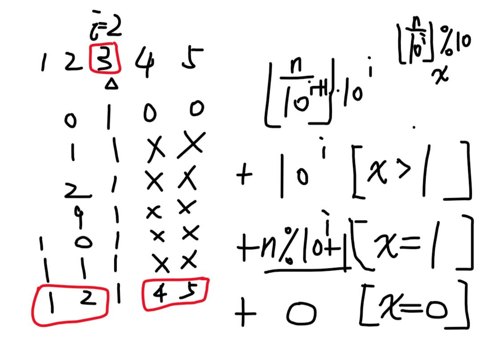

关注公众号【算法码上来】，每日算法干货马上就来！

题目描述
给定一个整数 n，计算所有小于等于 n 的非负整数中数字 1 出现的个数。
示例1
输入：
13
输出：
6
解释：
数字 1 出现在以下数字中: 1, 10, 11, 12, 13 。题解
这题是我搜数位 dp 题目搜出来的，于是我直接用数位 dp 方法把它过了，后来发现其实没必要这么麻烦，简单的计算就能算出来了，这里两个方法我都讲一下。
数学方法
我们不妨用 n = 12345 来举个例子。要求小于等于 n 的数字里有多少个 1 ，我们不妨转换个角度，看某一位数字是 1 的话，有多少数字小于 n 。
例如从右向左数第 i = 2 位（数字 3 ），如果这一位取 1 ，那么左边 2 位如果取 0-11 ，那么右边 2 位就没有任何限制，从 0 取到 99 都行。如果左边 2 位如果取 12 ，那么就得考虑 n 中第 i 位是几了，如果大于 1 ，那么右边 2 位还是没有限制；如果等于 1 ，那么右边 2 位只能取 0-45 ；如果等于 0 ，那就没得取了。
下面这张图是我打的草稿，看的更清楚一点：

一般化描述就是，考虑从右往左数第 i 位是 1 的数字数量。那么 n 中第 i 位左边部分的数字是 $\left\lfloor \frac{n}{10^{i+1}} \right\rfloor$ ，而右边可以取的数量是 $10^i$ ，相乘就是总的数量 $\left\lfloor \frac{n}{10^{i+1}} \right\rfloor \cdot 10^i$ 。如果左边直接取最大值，那么就要考虑第 i 位数字是几了，计算可以得到第 i 位数字为 $\left\lfloor \frac{n}{10^{i}} \right\rfloor \% 10$ ，记为 x 。如果 $x > 1$ ，那么右边无限制，有 $10^i$ 种取法；如果 $x = 1$ ，那么右边有 $n \% 10^i + 1$ 种取法；如果 $x = 0$ ，那么右边无法取，因为第 i 位都没法取 1 。
综上，令 $x = \left\lfloor \frac{n}{10^{i}} \right\rfloor \% 10$ ，那么答案就是：
$$
\left\lfloor \frac{n}{10^{i+1}} \right\rfloor \cdot 10^i + 10^i \cdot [x > 1] + (n \% 10^i + 1) \cdot [x = 1]
$$
数位dp
数位 dp 就麻烦许多了，不想看的可以直接跳过了。
首先我们从最高位开始往右递归计算，用 pos, count, limit 来表示计算到第 pos 位（从左往右，和数学方法不一样）时，已经出现了 count 个 1 ，并且之后的数字有无限制（也就是能否取遍 0-9 ），这种状态之下方法数是多少。
那么第 pos 位我们可以取的数字有哪些呢？如果 limit = 1 也就是有限制，那么只能取 0-n中第pos位，如果没有限制那就取 0-9 。
假设第 pos 位取 1 ，那么 pos 就转移到了 pos+1 ，count 转移到了 count+1 ，limit 呢？只有当原来有限制，并且第 pos 位正好取了最大值也就是 n 中第 pos 位数字时，limit 还是 1 ，否则的话限制取消，后面的数字随便取。如果第 pos 位不取 1 ，那么除了 count 不变以外，其他两个状态还是跟上面一样转移。
终止状态的话，如果遍历到了最后一位结束，就返回 count 数量就行了，表示当前数字中有 count 个 1 。
这样的话会有很多重复计算的状态，所以需要用到记忆化搜索，用 dp[pos][count] 来保存 pos, count, limit=0 状态下的答案。为什么只保存 limit=0 的答案呢？因为只有无限制的情况下，后面的数字才能随便取，跟 n 是多少没有关系。否则的话 n 变了后面的值就会受限于 n ，那么就不是一个定值了，没法保存。
那么 limit=1 不保存的话会不会超时呢？不会的，因为每一位只有一种取法会使得后面的数字继续有限制，所以整体上来看，有限制的状态个数是个常数，并不需要担心超时。
代码
数学方法（c++）
class Solution {
public:
int countDigitOne(int n) {
int res = 0;
for (long i = 1; i <= n; i *= 10) {
res += n / (i * 10) * i;
int x = (n / i) % 10;
res += x > 1 ? i : (n % i + 1) * x;
}
return res;
}
};数位dp（c++）
class Solution {
public:
int a[14];
int dp[14][14];
int dfs(int pos, int count, int limit) {
if (!pos) return count;
if (!limit && dp[pos][count] != -1) return dp[pos][count];
int res = 0, ub = limit ? a[pos] : 9;
for (int i = 0; i <= ub; ++i) {
res += dfs(pos-1, count+(i==1), limit&&i==a[pos]);
}
return limit ? res : dp[pos][count]=res;
}
int countDigitOne(int n) {
memset(dp, -1, sizeof dp);
int len = 0;
while (n) {
a[++len] = n % 10;
n /= 10;
}
return dfs(len, 0, 1);
}
};数学方法（python）
class Solution:
def countDigitOne(self, n: int) -> int:
res, i = 0, 1
while i <= n:
res += n // (i * 10) * i
x = (n // i) % 10
res += i if x > 1 else (n % i + 1) * x
i *= 10
return res